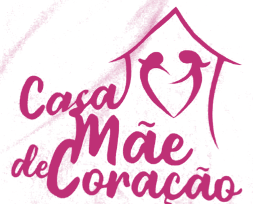

Missão
Oferecer a todas as mulheres, independente de raça, situação social ou financeira e gênero, um lugar para chamar de segundo lar, com foco no fortalecimento e no empoderamento delas.
Toda violência contra a mulher atinge também os filhos.
Em perigo agora? Ligue 190. Para denunciar violência contra a mulher, ligue 180.
A Casa Mães de Coração é um lugar para chamar de segundo lar: acolhimento e atendimento gratuito para mulheres vítimas de violência doméstica e seus dependentes.
A Casa Mães de Coração nasceu, de forma intencional, como associação sem fins lucrativos. Presidente: Lucélia Santos Lima.
Um chá reuniu mulheres de outro projeto. Ao ouvir a história de cada uma, percebemos que era hora de arregaçar as mangas e lutar juntas contra um gigante social.
A Casa passa a ter endereço fixo.
Ao se juntarem, mulheres que pareciam frágeis mostraram uma força extraordinária: guerreiras adormecidas se levantando e buscando dentro de si as armas para a batalha.

“Porque, qualquer que fizer a vontade de meu Pai que está nos céus, este é meu irmão, e irmã e mãe.”
Mateus 12:50
Oferecer a todas as mulheres, independente de raça, situação social ou financeira e gênero, um lugar para chamar de segundo lar, com foco no fortalecimento e no empoderamento delas.
Toda violência contra a mulher atinge também os filhos.
Ser uma instituição de referência em acolhimento e apoio às mulheres, com um trabalho que fortalece de dentro para fora: o social, o psicológico e as dores da vida tratados em conjunto, com fé em algo maior.
Acolher a mulher e a sua situação, enxergar suas lutas e anseios e fortalecê-la nos aspectos mental, físico, social e cidadão, para que seja valorizada e supere as situações adversas da vida.
Todo o nosso trabalho tem um único objetivo: a cura interior.
A Casa oferece ajuda gratuita a mulheres e seus dependentes vítimas de violência doméstica, para que possam refazer a autoestima e alcançar a cura interior.
Se você ou alguém que você conhece vive violência doméstica, fale com a gente. O atendimento é gratuito. Se outra pessoa tem acesso ao seu celular, use o botão “Sair rápido” e apague a conversa depois.
Pedir ajuda no WhatsAppEncontros, atividades com as famílias e eventos realizados pela Casa. Deslize ou use as setas. Clique em uma foto para ampliar.
Para continuar o trabalho, a Casa precisa de alimentos, roupas, produtos de higiene e limpeza, apoio financeiro, profissionais e mais voluntários. Toda contribuição é bem-vinda. Escolha como participar e fale com a gente pelo WhatsApp.
Ofereça seu trabalho no atendimento às mulheres.
Doe seu tempo, seu cuidado e sua dedicação.
Doe alimentos para a Casa.
Doe roupas para as mulheres atendidas.
Ajude com uma contribuição em dinheiro.
Doe produtos de higiene e limpeza.
Av. Albert Einstein, 497
Vila Iasi, Taboão da Serra - SP
Horário: 10h às 17h
As visitas são agendadas.